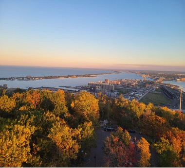
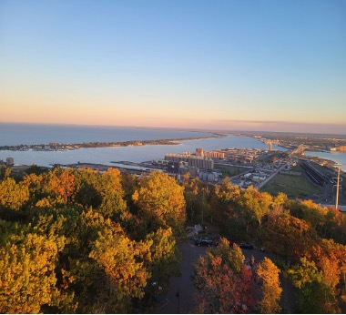

Discover UMD & Duluth
Where Lake Superior meets inspiration ✨
Why I Chose UMD
Why did I choose UMD? Well in all honesty it was my backup school when I applied to UMD. I started my college career as a cyber security major and I realized that it wasn't something I wanted to pursue and I always knew that I loved the business world. I first applied to Carlson school of management and UMD as my back up. I sadly got rejected from Carlson and later committed to UMD. I came to UMD completely clueless but as weeks went on I started to love here in UMD and Duluth in general. One of my favorite places in Duluth is the point park beach. Back at my home town we don't have that many beaches so one of the greatest things about Duluth is the beaches. My personal experience here in UMD was a struggle at first but as time went on it got a lot better. My first two weeks I wasn't able to find as much people i thought i could connect with especially since i was a transfer student, everyone that was my age already had their own friends group but as time went on I got to join some clubs and slowly got to understand my way around and got to see new places and found my people.
- Beautiful Campus
- Close Community
- Strong Academics
- Lakeside Serenity
- Welcoming Atmosphere
What I Love About Duluth
Duluth is one of those rare places where nature, creativity, and warmth come together. I love the views of Lake Superior, the vibrant local coffee shops, and the friendly spirit that flows through the city. Whether it’s walking the Lakewalk or hiking at Enger Tower, Duluth reminds me to slow down and appreciate life’s beauty.
 


30-Second UMD Marketing Video
Our team created a short video that captures what makes UMD so special — the campus, the people, and the experiences that make this place unforgettable.
Campus Experiences
My journey at UMD has been filled with memorable moments — late-night study sessions at the Library, laughter in Kirby Student Center, and quiet reflection by the lake. These experiences shape who I am and why I cherish this place.